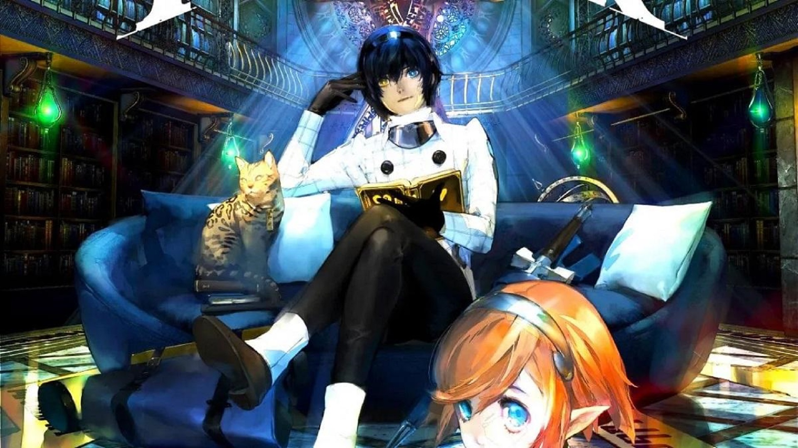

.
Home
Quienes somos
Productos
(current)

Previous
Next
Persona 5 Royal is a new challenge to defy conventions, discover the power within, and fight for justice.
Join the Phantom Thieves and strike back against the corruption overtaking cities across Japan.
A mature action-puzzle thriller. Available on PlayStation®4, enhanced like a full-bodied wine.
The ambitions of god and human clash amidst the horror of a dying world.
The Phantom Thieves return for a new heist! Will they be able to steal your heart through dance in the mysterious Club Velvet? Don’t miss this new rhythm game featuring the familiar characters from the hit, Persona 5!
With the fun local couch co-op and online multiplayer you remember, up to four players can experience countless hours battling together.
PlayStation®3 and PlayStation®4
The fifth main installment of the long-running Etrian Odyssey series is finally arriving!
Nine individuals come together to form an amazing alliance and change the world.
The missing entry in the Shin Megami Tensei series in North America!
It’s time to return to Vainqueur and unlock the time traveling power of the White Chronicle
A Stranger Journey Back
Available Now on Nintendo Switch™ and PlayStation® 4
The rich Utawarerumono visual novel tradition continues in Mask of Truth.
The breathtaking art and rousing soundtrack will immerse players into the fantasy world of Utawarerumono.
Giant rocks rolling through historical and artistic ages
Featuring a story written by Persona veteran Tadashi Satomi.
“KOF” EVOLVES TO THE NEW GENERATION
Change the fate of the world when the end of days draws near in Odin Sphere Leifthrasir
From the makers of the Luminous Arc series comes Stella Glow, a new music-filled RPG now available on Nintendo 3DS™.